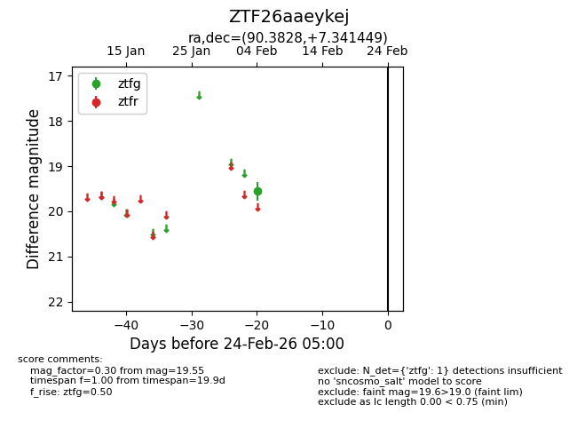
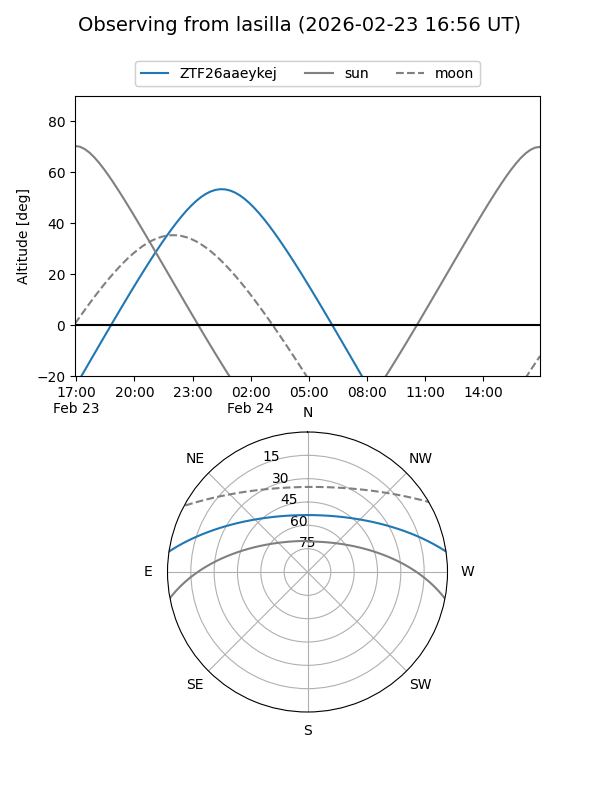
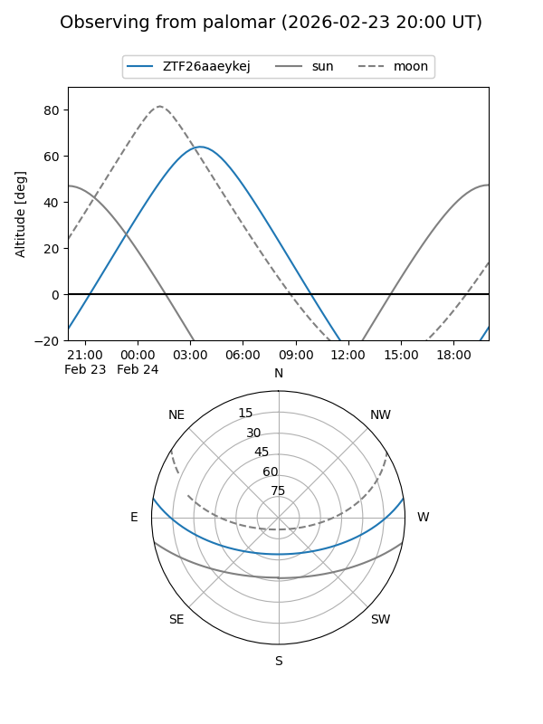

ZTF26aaeykej
Target ZTF26aaeykej at 2026-02-24 09:08
Aliases and brokers:
FINK: link
Lasair: link
ALeRCE: link
alt names
ZTF26aaeykej (ztf,fink_ztf)
Coordinates:
equatorial (ra, dec) = 90.3828,+7.34145
equatorial (HMS+DMS) = 06:01:31.88,+07:20:29.22
galactic (l, b) = (200.6157,-7.61013)
Flags:
Photometry:
last ztfg=19.55
1 ztfg detections
Lightcurve

Visibility


Additional plots